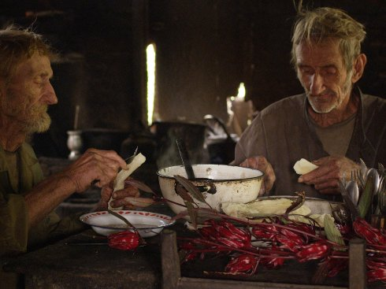

Lamaland 1

Pablo Sigg
|
MX,
CH 2018
|
Sonntag 13 okt | 18.30 | Werkstattkino
Zehn Jahre verbrachte der Filmemacher im Dschungel von Paraguay mit den verwahrlosten Schweickhart-Brüdern. Sie sind die letzten Nachfahren der arischen Kolonie „Nueva Germania“, die 1887 von Nietzsches Schwester Elisabeth gegründet wurde. Mehr als hundert Jahre Einsamkeit und stummer Wahn seitdem. Tropisches Trance-Kino aus einer versunkenen Welt. Eine True-Crime-Story, in der die Brüder sich selbst spielen.
Pablo Sigg geb. 1974 in Mexiko, ist bekannt für seinen langen Rechercheprozesse. LAMALAND 2 wird gerade aus dem umfangreichen 35mm-Filmmaterial geschnitten. |
| Films Der Wille zur Macht
2013 | I, of Whom I Know Nothing 2014 | Lamaland 1 2018 |